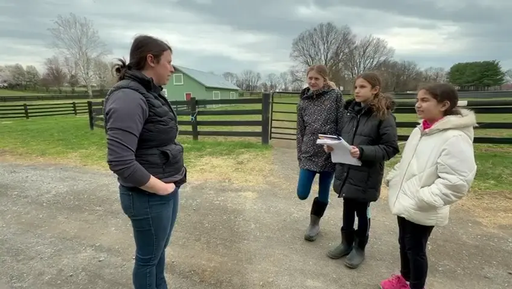
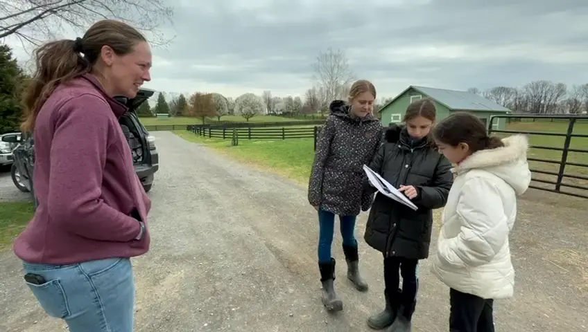

A Conversation at the Barn
5:15
Inside the barn, Charlotte and the group bring their notes into a conversation in a wood-paneled room.
Watch interviewJoin Charlotte for three conversations, starting inside the barn and continuing outdoors by the paddock.
5:15
Inside the barn, Charlotte and the group bring their notes into a conversation in a wood-paneled room.
Watch interview
0:56
The group takes the conversation outside, gathering with their questions beside a paddock gate.
Watch interview
0:39
Beside the fence, the group looks over their notes together as the conversation continues outdoors.
Watch interview